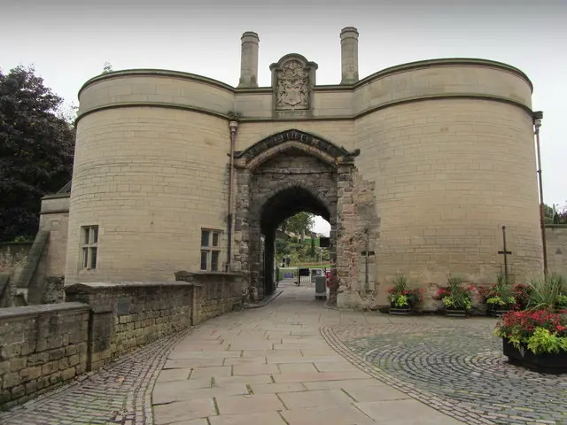
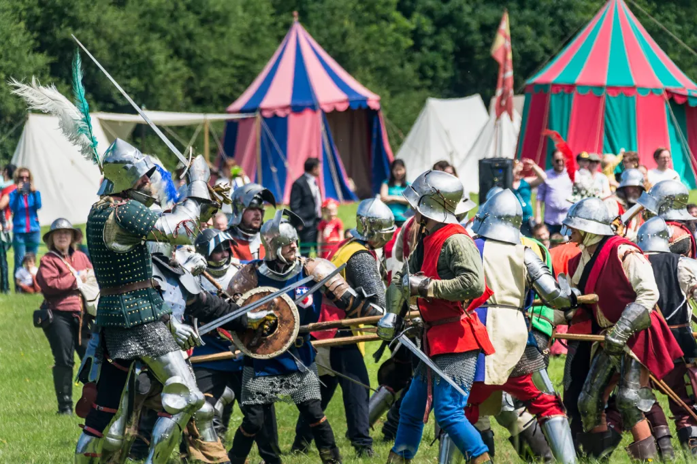

Re-enactment & living history gallery
TESTING EVENTS Step into the world of Sir John Donne!
Discover medieval tents, authentic armour, and fascinating historical artefacts in our immersive gallery.
Newstead Abbey
Short description of the event / venue. / relevant note i.e. dog freindly? opeing times?
📅 Dates: 29 - 31 May 2026
⏰ Time: 10:00 - 16:00
Notes:
Dog friendly: Outside grounds & cafe courtyard only

Nottingham Castle
TESTING SENTENCE Short description of the event / venue.
📅 Date: 23 May - 26 May 2026
Notes:
Dog friendly: Outdoor grounds & gardens; provided dogs are kept on leads.

Barnet Medieval Festival
This 555th-anniversary event commemorates the 1471 Battle of Barnet with dramatic re-enactments, medieval music, and crafts. It is a family-friendly weekend featuring over 500 actors, with parking and shuttle buses available.
📅 Dates: 6 & 7 June 2026
Notes:
Dog friendly: Outdoor grounds & gardens; provided dogs are kept on leads.